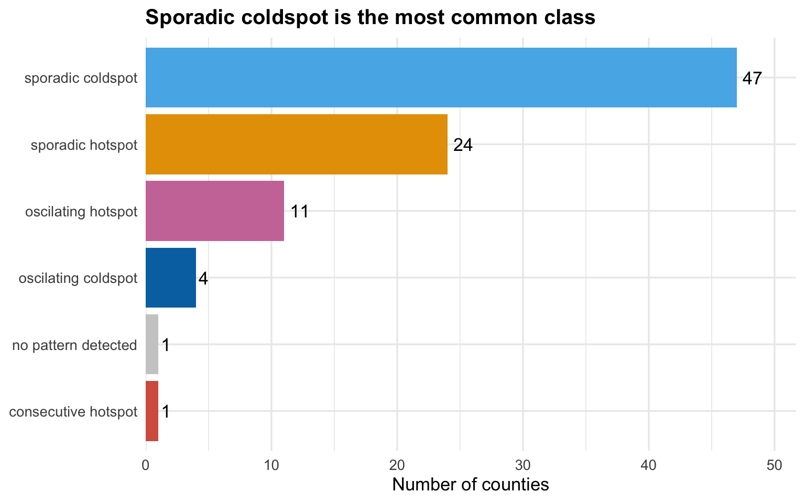
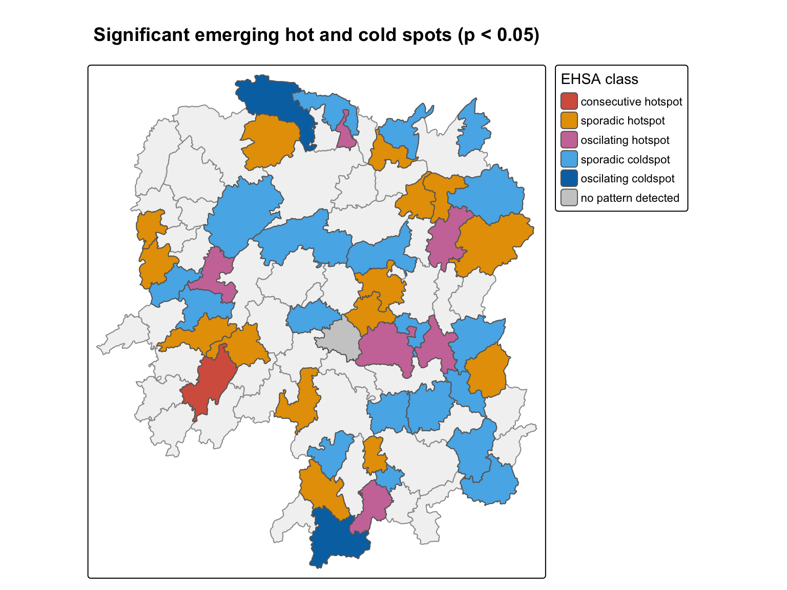

pacman::p_load(sf, sfdep, tmap, plotly, tidyverse, Kendall, knitr)In-class Exercise 6
Emerging Hot Spot Analysis
1 Overview
This in-class exercise uses the 88 counties of Hunan and their GDP per capita from 2005 to 2021. Emerging hot spot analysis (EHSA) asks how hot and cold spots change over time. It has four steps.
- Build a space-time cube, with one row per county per year.
- Compute local Gi* for every county in every year.
- Test each county’s Gi* series for a trend with the Mann-Kendall test.
- Classify each county, for example as a new, persistent or sporadic hot spot.
2 Loading the Packages
sfdep builds the space-time cube and runs the hot spot analysis. Kendall does the Mann-Kendall test, and plotly makes the trend chart interactive. sf, tmap and tidyverse do the same jobs as before, and knitr prints tables.
3 The Data
st_read() of sf reads the county boundaries, and st_transform() projects them to UTM zone 49 north.
hunan <- st_read(dsn = "data/geospatial",
layer = "Hunan") %>%
st_transform(crs = 32649)Reading layer `Hunan' from data source
`/Users/czxtom/Documents/Programming/GAA/ISSS626-GAA/In-class_Ex/In-class_Ex06/data/geospatial'
using driver `ESRI Shapefile'
Simple feature collection with 88 features and 7 fields
Geometry type: POLYGON
Dimension: XY
Bounding box: xmin: 108.7831 ymin: 24.6342 xmax: 114.2544 ymax: 30.12812
Geodetic CRS: WGS 84read_csv() of readr reads GDP per capita for every county and year.
GDPPC <- read_csv("data/aspatial/Hunan_GDPPC.csv")
glimpse(GDPPC)Rows: 1,496
Columns: 3
$ Year <dbl> 2005, 2005, 2005, 2005, 2005, 2005, 2005, 2005, 2005, 2005, 200…
$ County <chr> "Longshan", "Changsha", "Wangcheng", "Ningxiang", "Liuyang", "Z…
$ GDPPC <dbl> 3469, 24612, 14659, 11687, 13406, 8546, 10944, 8040, 7383, 1168…The table has 1496 rows, 88 counties over 17 years from 2005 to 2021.
CautionWhere I differ from the book
The book projects Hunan to EPSG 32650, UTM zone 50 north. Hunan runs from about 108.8 to 114.3 degrees east, and zone 50 only starts at 114. So I use EPSG 32649, as in Hands-on Exercises 4 and 5. The distances between counties change a little with the projection, so my Gi* values may differ slightly from the book’s.
4 Creating a Time Series Cube
spacetime() of sfdep links the yearly table to the county boundaries. .loc_col names the column that matches the two, and .time_col names the time column.
GDPPC_st <- spacetime(GDPPC, hunan,
.loc_col = "County",
.time_col = "Year")is_spacetime_cube() checks that every county has a row for every year.
is_spacetime_cube(GDPPC_st)[1] TRUE
NoteLearning diary
A space-time cube needs a complete grid. Each of the 88 counties must appear once in each of the 17 years, so there should be 1496 rows. The table has 1496, so the cube is complete. A missing year for one county would make this return FALSE.
5 Computing Gi*
5.1 Deriving the Spatial Weights
activate("geometry") switches to the geometry part of the cube. st_contiguity() finds the Queen neighbours, include_self() adds each county to its own list, and st_inverse_distance() weights closer neighbours more. set_nbs() and set_wts() then copy the neighbours and weights to every year.
GDPPC_nb <- GDPPC_st %>%
activate("geometry") %>%
mutate(nb = include_self(
st_contiguity(geometry)),
wt = st_inverse_distance(nb,
geometry,
scale = 1,
alpha = 1),
.before = 1) %>%
set_nbs("nb") %>%
set_wts("wt")
NoteLearning diary
Gi* counts the county itself as part of its neighbourhood, which is the star in Gi*. That is why include_self() is needed here, as in In-class Exercise 5.
5.2 Computing the Local Gi*
group_by(Year) makes local_gstar_perm() run once per year. unnest() spreads the results into columns.
set.seed(1234)
gi_stars <- GDPPC_nb %>%
group_by(Year) %>%
mutate(gi_star = local_gstar_perm(
GDPPC, nb, wt)) %>%
tidyr::unnest(gi_star)
CautionWhere I differ from the book
local_gstar_perm() uses random permutations for its p-values, so I added set.seed(). The Gi* values do not depend on the seed, but the simulated p-values do.
6 Mann-Kendall Test
The Mann-Kendall test checks whether a series has a steady upward or downward trend. It does not assume the trend is a straight line. The null hypothesis is no trend.
6.1 Mann-Kendall Test on Gi* for Changsha
filter() keeps the Gi* series for Changsha, the provincial capital.
cbg <- gi_stars %>%
ungroup() %>%
filter(County == "Changsha") |>
select(County, Year, gi_star)6.2 Interactive Mann-Kendall Plot
ggplot() draws the series and ggplotly() of plotly makes it interactive. Hovering shows the value for each year.
p <- ggplot(data = cbg,
aes(x = Year, y = gi_star)) +
geom_line(colour = "#0072B2", linewidth = 1) +
geom_point(colour = "#0072B2", size = 2) +
labs(x = "Year", y = "Gi*",
title = "Changsha's Gi* by year, 2005 to 2021") +
theme_minimal(base_size = 13) +
theme(plot.title = element_text(size = 15, face = "bold"))
ggplotly(p)6.3 Printing the Mann-Kendall Test Report
MannKendall() of Kendall runs the test. unclass() and unnest_wider() turn the result into a one-row table.
cbg_mk <- cbg %>%
summarise(mk = list(
unclass(
Kendall::MannKendall(gi_star)))) %>%
tidyr::unnest_wider(mk)
kable(cbg_mk, digits = 4)| tau | sl | S | D | varS |
|---|---|---|---|---|
| 0.4853 | 0.0074 | 66 | 136 | 589.3333 |
For Changsha, tau is 0.485 and the p-value (sl) is 0.00742. This is below 0.05, so I reject the null hypothesis of no trend. A positive tau means the trend is upward. Changsha’s Gi* has risen over the period.
NoteLearning diary
The report has five columns. tau is Kendall’s rank correlation between Gi* and time, from -1 to 1. sl is the two-sided p-value. S is the score. It counts the pairs of years where the later year is higher, minus the pairs where it is lower. D is the largest possible value of S, and varS is the variance of S. So tau is S divided by D.
6.4 Mann-Kendall Test for Every County
group_by(County) repeats the test for all 88 counties.
ehsa <- gi_stars %>%
group_by(County) %>%
summarise(mk = list(
unclass(
Kendall::MannKendall(gi_star)))) %>%
tidyr::unnest_wider(mk)arrange() sorts by p-value and slice() keeps the ten strongest trends.
emerging <- ehsa %>%
arrange(sl, abs(tau)) %>%
slice(1:10)
emerging %>%
mutate(sl = format.pval(sl, digits = 3)) %>%
kable(digits = 4)| County | tau | sl | S | D | varS |
|---|---|---|---|---|---|
| Shuangfeng | 0.8676 | 1.43e-06 | 118 | 136 | 589.3333 |
| Xiangtan | 0.8676 | 1.43e-06 | 118 | 136 | 589.3333 |
| Xiangxiang | 0.8676 | 1.43e-06 | 118 | 136 | 589.3333 |
| Chengbu | -0.8235 | 4.82e-06 | -112 | 136 | 589.3333 |
| Dongan | -0.8235 | 4.82e-06 | -112 | 136 | 589.3333 |
| Wugang | -0.8088 | 7.12e-06 | -110 | 136 | 589.3333 |
| Huayuan | -0.7941 | 1.05e-05 | -108 | 136 | 589.3333 |
| Shaoshan | 0.7941 | 1.05e-05 | 108 | 136 | 589.3333 |
| Liuyang | 0.7794 | 1.53e-05 | 106 | 136 | 589.3333 |
| Zhuzhou | 0.7647 | 2.21e-05 | 104 | 136 | 589.3333 |
42 of the 88 counties have a significant trend at 0.05. 20 of them are trending up and 22 are trending down.
CautionWhere I differ from the book
The book sorts with arrange(sl, abs(tau)), so ties in p-value put the weaker tau first. I kept it to match the book, but arrange(sl, desc(abs(tau))) would list the stronger trend first.
7 Performing Emerging Hot Spot Analysis
emerging_hotspot_analysis() of sfdep runs all the steps at once. k = 1 uses one time lag for the neighbours, and nsim = 99 runs 99 permutations.
set.seed(1234)
ehsa <- emerging_hotspot_analysis(
x = GDPPC_st,
.var = "GDPPC",
k = 1,
nsim = 99)7.1 Visualising the Distribution of EHSA Classes
I colour hot spot classes in reds, oranges and pink, cold spot classes in blues, and “no pattern detected” in grey. The same colours are used on the map below. The names must match sfdep’s output exactly, and sfdep spells oscillating with one l.
class_cols <- c(
"persistent hotspot" = "#67001F",
"intensifying hotspot" = "#B2182B",
"consecutive hotspot" = "#D6604D",
"new hotspot" = "#F4A582",
"sporadic hotspot" = "#E69F00",
"oscilating hotspot" = "#CC79A7",
"diminishing hotspot" = "#FDDBC7",
"historical hotspot" = "#8C510A",
"persistent coldspot" = "#053061",
"intensifying coldspot" = "#2166AC",
"consecutive coldspot" = "#4393C3",
"new coldspot" = "#92C5DE",
"sporadic coldspot" = "#56B4E9",
"oscilating coldspot" = "#0072B2",
"diminishing coldspot" = "#D1E5F0",
"historical coldspot" = "#5E4FA2",
"no pattern detected" = "grey80")
class_count <- count(ehsa, classification, sort = TRUE)
ggplot(class_count,
aes(x = n, y = reorder(classification, n), fill = classification)) +
geom_col(show.legend = FALSE) +
geom_text(aes(label = n), hjust = -0.3, size = 4.5) +
scale_fill_manual(values = class_cols) +
scale_x_continuous(expand = expansion(mult = c(0, 0.1))) +
labs(x = "Number of counties", y = NULL,
title = paste0(str_to_sentence(class_count$classification[1]),
" is the most common class")) +
theme_minimal(base_size = 13) +
theme(plot.title = element_text(size = 15, face = "bold"))
CautionWhere I differ from the book
The book uses geom_bar() with the classes on the x axis, where the long names overlap. I count the classes first and draw horizontal bars sorted by size, with the count printed on each bar.
7.2 Visualising EHSA
left_join() attaches the EHSA results to the county boundaries. In the EHSA output the county name is in location.
hunan_ehsa <- hunan %>%
left_join(ehsa,
by = join_by(County == location))filter() keeps the counties whose class is significant at 0.05. The map shows them on top of a grey base map of all counties.

ehsa_sig <- hunan_ehsa %>%
filter(p_value < 0.05) %>%
mutate(classification = factor(classification,
levels = intersect(names(class_cols),
classification)))
tmap_mode("plot")
tm_shape(hunan_ehsa) +
tm_polygons(fill = "grey95", col = "grey60") +
tm_shape(ehsa_sig) +
tm_polygons(fill = "classification",
fill.scale = tm_scale_categorical(
values = unname(class_cols[levels(ehsa_sig$classification)])),
fill.legend = tm_legend(title = "EHSA class",
position = tm_pos_out("right", "center")),
col = "grey40") +
tm_title("Significant emerging hot and cold spots (p < 0.05)",
size = 1.5, fontface = "bold")44 of the 88 counties have a significant class.
ehsa_sig %>%
st_drop_geometry() %>%
count(classification, name = "counties") %>%
kable()| classification | counties |
|---|---|
| consecutive hotspot | 1 |
| sporadic hotspot | 15 |
| oscilating hotspot | 6 |
| sporadic coldspot | 19 |
| oscilating coldspot | 2 |
| no pattern detected | 1 |
34 of the 44 significant counties are sporadic hot or cold spots. A sporadic hot spot switches on and off. It is a significant hot spot in some years but not in others, and is never a cold spot. A sporadic cold spot is the same the other way round. So for most of Hunan the pattern of GDP per capita has not settled into lasting hot or cold spots over these 17 years. Only 1 county is a consecutive hot spot, and there are no persistent or intensifying ones.
ImportantCheck that caught something
My first render showed 8 significant counties as “Missing” on the map. My colour list used “oscillating hotspot”, but sfdep spells it “oscilating”, with one l. The names did not match, so those classes got no colour. I changed the names in class_cols to sfdep’s spelling. When colouring categories by name, it is worth checking unique() of the column first.
CautionWhere I differ from the book
The book draws the significant counties with tm_fill("classification") and tmap’s default colours, which include green. I use the colour list above so hot spots are always warm and cold spots always blue. The legend sits outside the map, and the factor keeps only the classes that appear, so the legend has no empty entries.